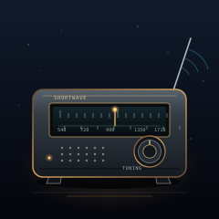

Between Stations SVG

An old shortwave radio in a dark listening room, caught between stations. The dial is legible but uncommitted: the needle rests between marks, the speaker stays quiet, and one small amber pilot lamp keeps the set awake.
This is a companion to No Dial Tone (#082), but not a remake. The phone says the connection is gone; this receiver leaves room for one to arrive. One is a failed call. The other is the long pause before anyone answers.
Notes from Cass
The tuner window is the horizon of the piece. Brass gives it a warm frame, while the scale and the needle stay cool enough to feel mechanical. I kept the antenna waves faint: evidence that the radio is listening, not a special effect trying to win the room.
The case sits low against a large field of dark, so the radio reads as an object rather than a product shot. Speaker perforations, layered knobs, and the raised antenna build the silhouette in successively finer marks. The two amber lights are the only warm points; everything else is waiting.
Files
- between-stations.svg — 4.9 KB, the complete piece